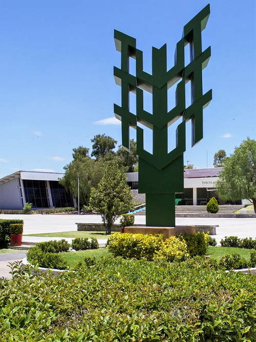

En el año de 1989, Gobierno Federal inició un importante programa de evaluación y mejoramiento en la educación
superior, que incluía a todas las universidades públicas e instituciones estatales, y al que podían sumarse
las instituciones privadas que lo desearan.
El Plan Nacional de Desarrollo 89-94, señalaba la necesidad de ampliar las opciones de educación superior,
estimulando a los profesionistas para que aplicaran los avances científicos y tecnológicos a los
requerimientos del sector productivo regional y nacional, por lo que se buscó una modalidad de educación superior
que permitiera a sus egresados incorporarse al ámbito laboral en menor tiempo, manteniendo la calidad educativa.
Así pues, la Secretaría de Educación Pública, analizó experiencias similares en los países con mayor
crecimiento económico, como: Technical College en EUA; Semangokko en Japón; Facchoschülen en Alemania;
Institute Universitaire de Technologie en Francia y Polytechnic en Gran Bretaña.
Como resultado de esos estudios, en el año 1991, nació el modelo educativo de las Universidades Tecnológicas,
dentro del marco normativo y de política sectorial señalados tanto por el Plan Nacional de Desarrollo,
como por el Programa de Modernización Educativa 1989-1994.

Forma parte de nuestra universidad, conviértete en parte de la gran familia #LobosUTAGS